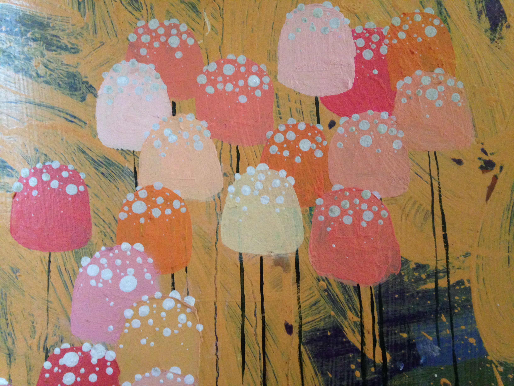

The Bacon binary cipher was created by the Elizabethan nobleman Sir Francis Bacon, who is also credited with inventing the scientific method. It's the predecessor of modern ASCII binary code, and an early example of steganography, the practice of concealing not just a message but the fact that the viewer is looking at a hidden message at all.
In Bacon's cipher, each letter of the alphabet corresponds to a five character pattern, where each character can take one of two forms, what Bacon called a-forms and b-forms, we would now call a bit. For instance, the letter 'B' maps to 'aaaab', and the letter 'C' maps to 'aaaba'. The genius of this cipher is that the a-forms and b-forms can any two alternating forms, for instance grey or black pixels in an image, a row of tulips and petunias in a flowerbed, or the color of threads in a shirt; a casual viewer wouldn't notice that they were looking at an encrypted message. The cipher can also be used in non-visual media, for instance the volume of notes in a song. There's even a documented example of a scientist altering the temperature of a fish habitat so that the fishs' otoliths, bones that add a layer each year like the rings of a tree, were encrypted to read, microscopically, 'hi mom'.
From the mid-1800's to the 1940's Bacon's cipher featured prominently in a fad for scholars to comb the plays of Shakespeare, looking for secret messages or evidence that Sir Francis Bacon was the real author of Shakespeare's work. As an interesting historical aside, one of the foremost advocates of this conspiracy theory was named Delia Bacon, and happened to be a friend of Samuel Morse, inventor of Morse code.
This site shows a trivial example of Bacon's encryption, mainly for illustration. The user is invited to enter a secret message, which will be encrypted into the text of Mary Wollstonecraft Shelley's 'Frankenstein'. This same text can then be copied and decrypted, returning the original message.
 {% endblock %}